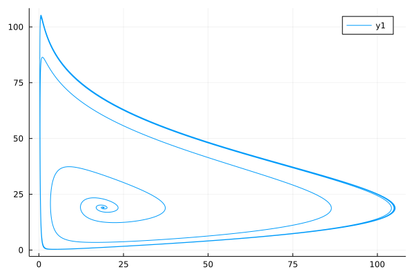

Fractional Order Delayed Differential Equations
In real world systems, delay is very often encountered in many practical systems, such as automatic control, biology and hydraulic networks, economics and long transmission lines. The delayed differential equation is used to describe these dynamical systems. Fractional order delayed differential equations as the generalization of the delayed differential equations, provide more freedom when we describing these systems, let's see how we can use FractionalDiffEq.jl to accelerate the simulation of delayed differential equations.
The delayed fractional differential equations has the general form:
\[D^\alpha_ty(t)=f(t,\ y(t),\ y(t-\tau)),\quad t\geq\xi\]
\[y(t)=\phi(t),\quad t\in[\xi-\tau,\ \xi]\]
While only given the initial condition is not enough to solve the delayed differential equations, a history function $\phi(t)$ must be provided to describe the history of the system($\phi(t)$ should be a continuous function).
All we need to do is to pass the function $f(t,\ y(t),\ y(t-\tau))$, and history function $\phi(t)$ to the FDDEProblem and choose an algorithm to solve problem:
using FractionalDiffEq, Plots
function ϕ(x)
if x == 0
return 19.00001
else
return 19.0
end
end
f(t, y, ϕ) = 3.5*y*(1-ϕ/19)
h = 0.05
α = 0.97
τ = 0.8
T = 56
fddeprob = FDDEProblem(f, ϕ, α, τ, T)
V, y = solve(fddeprob, h, DelayPECE())
plot(y, V, xlabel="y(t)", ylabel="y(t-τ)")
System of FDDE
\[\begin{cases} D^{\alpha_1}x=a(y(t)-x(t-\tau))\\ D^{\alpha_2}y=(c-a)x(t-\tau)-x(t)z(t)+cy(t)\\ D^{\alpha_3}z=x(t)y(t)-bz(t-\tau) \end{cases}\]
using FractionalDiffEq, Plots
α=[0.94, 0.94, 0.94]; ϕ=[0.2, 0, 0.5]; τ=0.009; T=1.4; h=0.001
function delaychen(x, y, z, xt, yt, zt, k)
a=35; b=3; c=27
if k == 1
return a*(y-xt)
elseif k == 2
return (c-a)*xt-x*z+c*y
elseif k == 3
return x*y-b*zt
end
end
prob = FDDESystem(delaychen, ϕ, α, τ, T)
x=solve(prob, h, DelayABMYuan())
plot(x[:, 1], x[:, 2], x[:, 3], title="Fractional Order Chen Delayed System")
FractionalDiffEq.jl is also capable of solving system of fractional delayed differential equations with matrix form:
\[D_{t_0}^\alpha\textbf{x}(t)=\textbf{A}(t)\textbf{x}(t)+\textbf{B}(t)\textbf{x}(t-\tau)+\textbf{f}(t)\]
We explain the usage of algorithm by using an example:
\[ \textbf{x}(t)=\begin{pmatrix} x_{1}(t) \\ x_{2}(t) \\ x_{3}(t) \\ x_{4}(t) \end{pmatrix} \]
\[ \textbf{A}=\begin{pmatrix} 0 & 0 & 1 & 0 \\ 0 & 0 & 0 & 1 \\ 0 & -2 & 0 & 0 \\ -2 & 0 & 0 & 0 \end{pmatrix} \]
\[ \textbf{B}=\begin{pmatrix} 0 & 0 & 0 & 0 \\ 0 & 0 & 0 & 0 \\ -2 & 0 & 0 & 0 \\ 0 & -2 & 0 & 0 \end{pmatrix} \]
With initial condition:
\[\textbf{x}_0(t)=\begin{pmatrix} \sin(t)\cos(t) \\ \sin(t)\cos(t) \\ \cos^2(t)-\sin^2(t) \\ \cos^2(t)-\sin^2(t) \end{pmatrix}\]
By using the MatrixForm method for FDDE in FractionalDiffEq.jl and plot the phase portrait:
using FractionalDiffEq, Plots
limit=100
t0=0
T=1
tau=3.1416
h=0.5
alpha=0.4
function x0(t)
return [sin(t)*cos(t); sin(t)*cos(t); cos(t)^2-sin(t)^2; cos(t)^2-sin(t)^2]
end
A=[0 0 1 0; 0 0 0 1; 0 -2 0 0; -2 0 0 0]
B=[0 0 0 0; 0 0 0 0 ;-2 0 0 0; 0 -2 0 0]
f=[0; 0; 0; 0]
result=solve(limit, alpha, A, B, f, t0, x0, T, tau, h, MatrixForm())
plot(result[:, 1], result[:, 3])